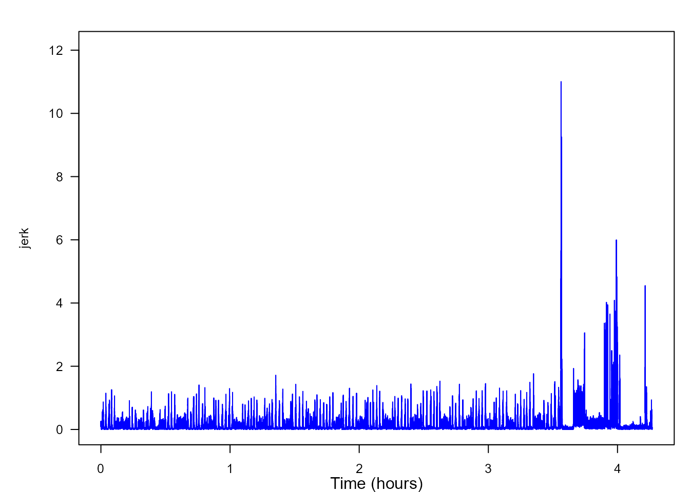
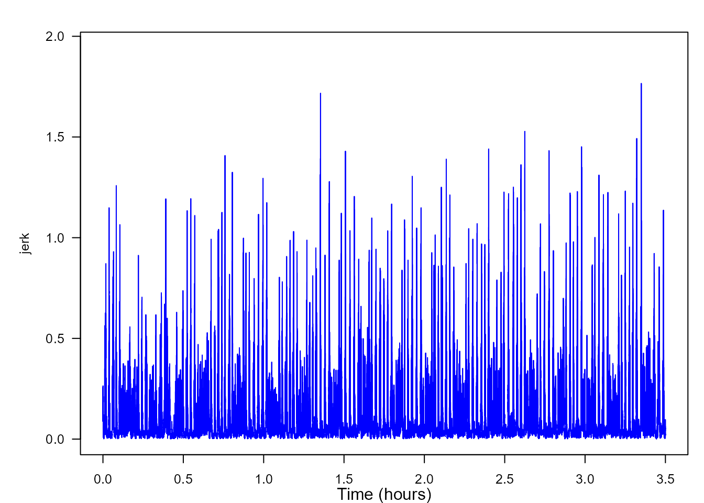
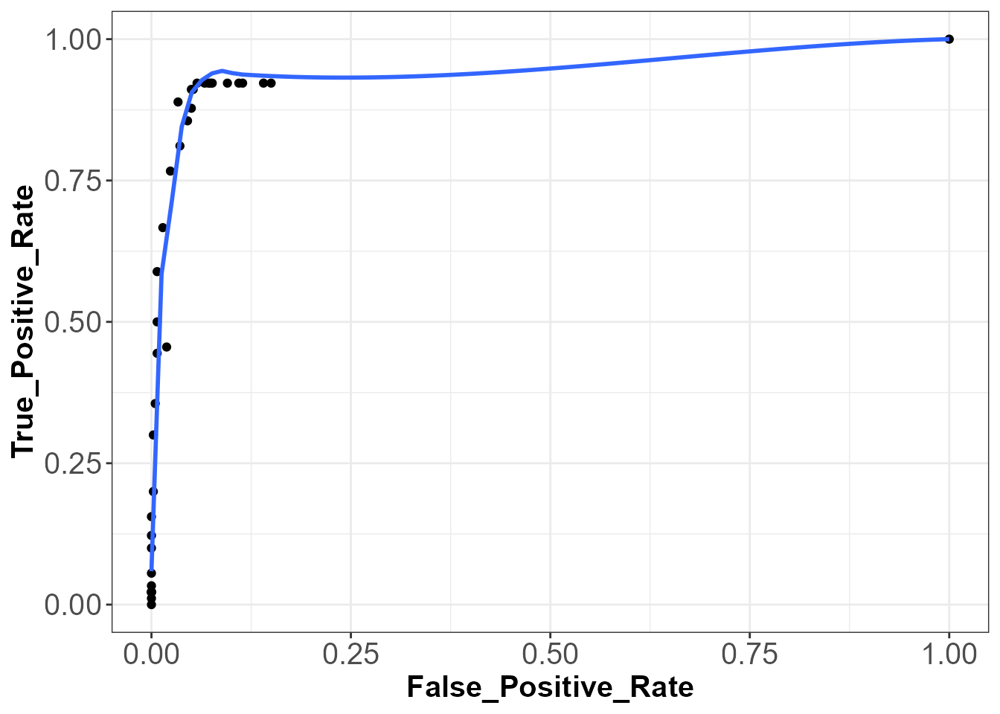
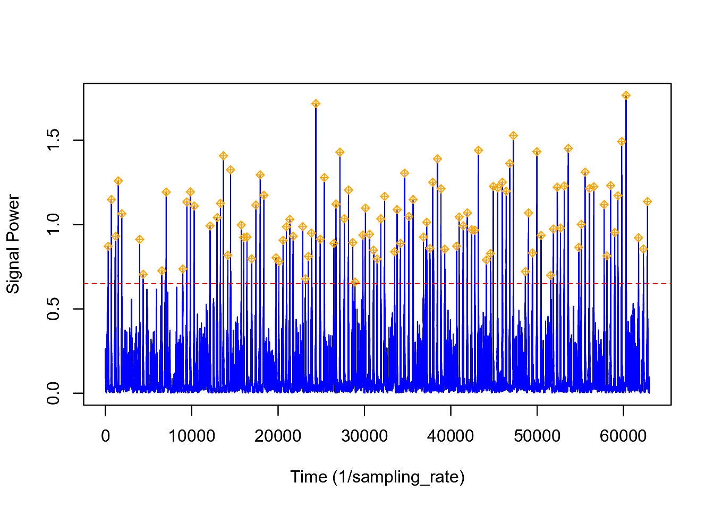
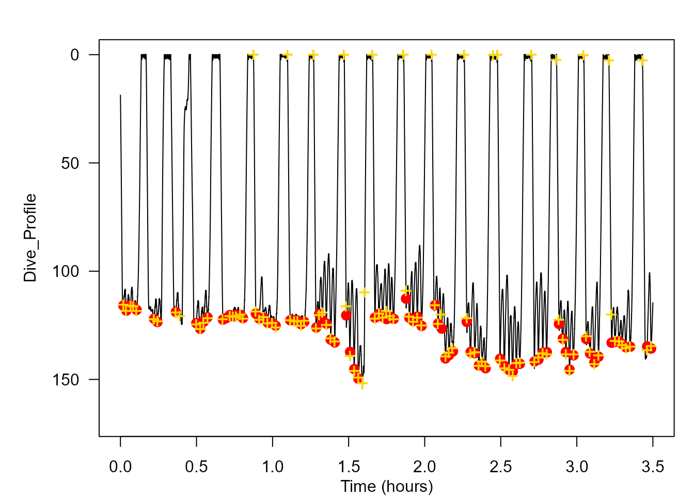

Detectors
David Sweeney
2021-07-28
Detectors.RmdIntroduction
Scientists have long struggled to study animal behavior while minimizing the amount of imposed stress upon the animal being observed (Brown et al., 2013; Schneirla, 1950). Difficulty also arises while attempting to observe animals in environments and during time periods that are relatively inaccessible to humans (Allen et al., 2016). Out of these two concerns arose the scientific field of biotelemetry (Kooyman, 2003). Since the first use of tagging devices on animals in 1963, the field of biotelemtery has evolved into a discipline that allows for the detailed behavioral studying of animals ranging in size from chipmunks to blue whales (Hammond et al., 2016; Acevedo-Gutiérrez et al., 2002; Kooyman, 2003).
Marine biologging has become one of the most prominent fields of biotelemetry. A variety of unique tagging systems (i.e. DTAGs (Johnson and Tyack, 2003), Acousonde tags (Burgess et al., 1998), etc.) have been developed by researchers around the world to try to gain non-invasive access into the unique lives of marine creatures. From the data obtained by these tags, scientists are able to determine the exact moment in time when an animal exhibited a certain behavior (Johson et al., 2009; Goldbogen et al., 2006; Goldbogen et al., 2008; Miller et al., 2004). However, due to the often high sampling rate of multisensor tags and the long duration of data recording, the process of determining the time of every instance of a given behavior can be quite laborious and time consuming.
In a quest to make data analysis more efficient, scientists have begun to develop software functions, which automatically detect animal behaviors from multisensor data (Owen et al., 2016; Allen et al., 2016; Doniol-Valcroze et al., 2011; Kokubun et al., 2011; Cox et al., 2017; Ware et al., 2011; Viviant et al., 2010). These functions scan through data searching for signal characteristics, which are known to be indicators of unique animal behaviors. While many of these methods have very specific data format requirements, more flexible methods that can easily be applied to data from many species and tag types would facilitate inter-study and inter-specific comparisons and meta-analysis of a variety of different animal behaviors.
In light of this, we have developed a function, usable in three widely used software programs (R (R Core Team 2017), Matlab (MathWorks, Natick, MA, USA), and Octave (Eaton et al., 2016)), which is generalizable to a wide variety of data types/formats, animals, and behaviors. The function, called detect_peaks, is a part of the tagtools package in R.
Function Design
The detect_peaks function contains 6 specified inputs and allows for additional inputs to be added at the end of the command.
detect_peaks(data, sr, FUN = NULL, thresh = NULL, bktime = NULL, plot_peaks = NULL,...)In this vignette, I will be describing what you, the user, need to understand before using this function and the thought process behind each significant step in the function script. Later on, in the section titled “Case Study”, I will walk through a specific example in which the function may be used.
In order to make the best use of this function, it is helpful to understand a few things regarding its design. As the name of the function suggests, this function determines the time of an animal behavior by going through large data sets and locating large spikes/peaks in a data signal. A peak is determined to represent a behavior event if it surpasses a predetermined threshold. In this function, the default threshold level (input “thresh”) is set to be the 0.99 quantile of the signal. However, this threshold level will not be appropriate for all circumstances. There may be cases in which this threshold level will result in many false positive detections (peak detected without a present behavior) or insufficient true positive detections (peak detected with a present behavior). Typically, if the threshold is too high, the number of missed detections will be high and only the strongest peaks representing behavior events will be detected. If the threshold is too low, the number of true positive detections will be high, but so will the number of false positives (Urick, 1967). Therefore, we allow the user to change the threshold level if they desire a level other than the default (more information about determining the best threshold level can be found in the case study below).
Once the peaks in the signal have been detected, the blanking time (input “bktime”) is used to determine the start and end times of each peak as well as the time at which the peak reached a maximum level in the signal. The blanking time is an amount of time within which all detected peaks are determined to represent one large, unified behavior event. The default value for the blanking time is set as the 0.80 quantile of a vector containing the time differences between consecutive signal values that surpass the specified threshold. The first job of the blanking time is to determine if adjacent peaks represent one or multiple behavior events. All detected peaks separated by a length of time larger than the blanking time are considered distinct behavior events. After this is done, start times (point at which the peak first exceeds the threshold), end times (point at which the peak finally receeds beneath the threshold value), peak times (point at which the peak reaches a maximum signal strength), and peak maximum (maximum value of the detected peak in the same units as the signal) are determined and returned in the output.
After the function has finished running, the signal being studied is plotted (assuming the input for “plot_peaks” is TRUE) with each determined peak labeled by a marker. At this point, you are able to examine the quality of the function’s performace at detecting true positive events. If you determine that you wish for the threshold level or the blanking time to be altered, you can click on the graph to change these values. For example, if you want to change only the threshold level, you can click once within the plot at the given threshold level desired and click “Finish”. This will rerun the function and return new peak detections and a new plot. If you only want to change the blanking time, you must click twice within the plot and then click “Finish”. The distance between each click is determines the new blanking time and the function is rerun. If you want to change both the threshold and the blanking time, you must click three times. The first click is to change the threshold and the second two clicks are to alter the blanking time. After clicking three times, the function is rerun. For the occassion when you are satisfied with the threshold and blanking times used in the first run of the function, you must simply click the “Finish” button located just above the plot, and peak detections will be returned. Along with the peak detections, the threshold level and blanking time used in the analysis are also returned in the ouput.
The final, and perhaps most crucial thing to understand before using this function, is that the input for “data” can be either a signal vector or a matrix of data. If the data is a signal vector, which the user wishes to have peaks detected from, nothing should be given for the input “FUN”. However, if the data given to the input is a matrix, an input for “FUN” must be given as the peak detector is not able to detect peaks from matrix data. The input for “FUN” is some function which the user wishes apply to the data matrix to generate a signal vector (which then passes through the peak detection process as descibed above). The signal vector should be some metric whose values are large when events occur, and small otherwise – the more specific to the event being detected, the better. Examples of functions to pass to “FUN” from the tagtools package are njerk, odba, etc., but any function (including custom function written by the user) can be used. I will provide examples of how the detect_peaks function works for both vector and matrix inputs in the case study below.
Case Study
Detecting lunge feeding events of a blue whale from triaxial acceleration data
In this case study, I will be providing an example on how to use the detect_peaks function in order to detect the times of lunge feedings events of a blue whale. Previous studies have shown the effectiveness of using the norm jerk of triaxial acceleration to detect the presence of lunge feeding events in tag data (Simon et al., 2012; Owen et al., 2016). The norm jerk is the square-root of the sum of the squares of each axis of the acceleration matrix. This is a good proxy for feeding behavior events because blue whales, and other lunge feeding whales, are known to drastically increase their speed and acceleration while approaching a feeding patch. Then, upon opening their mouthes to engulf the prey, there is an extremely sudden decrease in speed and acceleration due to drag. This rapid increase and decrease in speed and acceleration can be observed in the norm jerk signal as a large peak in the signal. Thankfully, the tagtools package has the function njerk which can be used to convert our acceleration matrix into the norm jerk signal vector.
To begin, I will load the data to be used in this case study. All of the following data was obtain by members of the SOCAL Behavioral Response Study project (http://sea-inc.net/socal-brs/). This particular blue whale was tagged with a DTAG2, which gathered multisensor data including, but not limited to, triaxial accelerometer and pressure (depth) data. This particular data set has been used in a variety of publications (DeRuiter et al., 2017; Goldbogen et al., 2013; Goldbogen et al., 2015). For the time being, we will load the acceleration matrix (within the whale frame) from the blue whale data set. The acceleration matrix within the whale frame will be labeled as “Aw”. I will also create a variable “sampling_rate” that specifies the sampling rate of my acceleration data, which is used to run the njerk function.
head(Aw, 5)## [,1] [,2] [,3]
## [1,] -0.757237 0.256707 0.594229
## [2,] -0.754772 0.243776 0.613680
## [3,] -0.749972 0.231498 0.635822
## [4,] -0.741841 0.231193 0.662992
## [5,] -0.730536 0.256309 0.700784
head(sampling_rate)## [1] 5Next, I will generate the norm jerk signal using the function njerk. A plot is shown to provide a helpful visualization of the signal.
library(tagtools)
jerk <- njerk(A = Aw, sampling_rate = sampling_rate)
X <- list(jerk = jerk)
plott(X, 5, line_colors = "blue") 
As you can see, what used to be an acceleration matrix has now been converted into the norm-jerk signal vector. From this plot, you can already begin to get an idea of where some of the lunge feeding events might be if you notice the occasional peaks in the signal. However, the peaks to the right of the 63000 time value begin to look unlike any of the other data. This is because at this time, the tag has fallen off the whale, consequentally not recording the norm jerk of the whale’s movement but instead the norm jerk of the tag as it is floating to the surface of the ocean. Because it is likely that these peaks will skew our results, we will remove the data after sample 63000.
jerk <- jerk[1:63000]The next step in detecting the event of a lunge feeding behavior is to gather the rest of the data necessary to use the detect_peaks function. In order to run the detect_peaks function, we must have have the variable “sr”, which is the sampling rate of our “data” input. If you are thinking to yourself, “Isn’t that the same as ‘sampling_rate’, which we already gathered?” You are correct. However, due to the nature of the function, the sampling rate must be labeled as something other than “sampling_rate”.
sr <- bw11_210a_tagdata$fs[1] At this point, we are almost ready to apply our norm jerk signal to the detect_peaks function. One thing to consider first, however, is whether we want to set a specified threshold and/or blanking time value or if we are okay simply using the default values for each of these inputs. In this instance, let’s assume that we don’t know what the perfect threshold value or blanking time should be, so we will use the default settings (for now).
detect_peaks(data = jerk, sr = sr, FUN = NULL,
thresh = NULL, bktime = NULL, plot_peaks = TRUE)
In the case where we did not need/want to see the jerk signal before running the detect_peaks function, we could have produced the same results using the following code:
detect_peaks(data = Aw[1:63000, ], sr = sr, FUN = "njerk",
thresh = NULL, bktime = NULL, plot_peaks = TRUE, sampling_rate = sampling_rate)Now, looking at the generated plot we can see the same signal as before, but now the plot has markers identifying all of the peaks that were detected. At this time, you can decide if you wish to change the level of the threshold or blanking time, consequentally rerunning the function. If you wish to accept the peak detections displayed, you can end the function and obtain the output list of detection times and levels. In order to fully walk through the capabilities of this function, let’s imagine that you wish to change both the threshold and the blanking time values to see how the output might change. To do this yourself, you would click within the plot, but given that I cannot do that, I will list the coordinates [x, y] as if I had clicked in three different locations on the plot: [19873, 0.874], [20000, 1.258], [19950, 0.736]. Based off of these three coordinates, the threshold value when the function is rerun will be 0.874, and the blanking time will be 50. Below is the new plot and a summary of our results. I have included the new code to provide a helpful visual, but when using detect_peaks() on your own, it is not necessary to retype the function after changing your threshold and/or blanking time from the interactive plot.
peaks <- detect_peaks(data = jerk, sr = sr, FUN = NULL,
thresh = 0.874, bktime = 50, plot_peaks = TRUE)
str(peaks)## List of 6
## $ start_time: num [1:232] 326 687 1124 1130 1187 ...
## $ end_time : num [1:232] 326 692 1125 1130 1191 ...
## $ peak_time : num [1:232, 1] 326 690 1124 1130 1190 ...
## $ peak_max : num [1:232, 1] 0.871 1.149 0.806 0.672 0.931 ...
## $ thresh : Named num 0.67
## ..- attr(*, "names")= chr "99%"
## $ bktime : Named num 3.2
## ..- attr(*, "names")= chr "80%"ROC Curves and Detection Optimization
Receiver operating characteristic (ROC) curves are a type of plot that are used in order to enhance the overall performance of automated event detection functions by determining an optimal threshold level. These plots are generated by determining the true positive rate and the false positive rate of an event detection function (in this case detect_peaks) at a specified threshold level. A single point on the plot specifies the true positive rate and false positive rate at one specified threshold level. Therefore, in order to generate a full ROC curve, event detections must be performed at a variety of different thresholds. The rate of true positive detections is calulated by dividing the number of true positive detections by the number of actual events. The rate of false positive detections is calculated by dividing the number of false positive detections by the total number of possible events within the time of tag recording. Determining the number of total possible events can be very difficult, unfortunately, because in a biological system, the value is dependent upon a long list of determining factors. For example, the number of times a whale can lunge feed within a given amount of time is dependent upon the availability of its food source, the energy required to swim through currents, the time required to filter water through its baleen after engulfing prey, etc. In a paper written by Jeremy Goldbogen of Stanford University, fin whales were determined to be able to lunge feed every 44.5 ± 19.1 seconds (Goldbogen et al., 2006). Therefore, since blue whales are of similar size to fin whales, averaging only a few meters longer, let’s say that blue whales are able to lunge feed after a minimum of 30 seconds since the previous feeding event. Using this number, we can determine the total possible number of lunge feeding events by dividing the total number of samples in our data by the sampling_rate, and then dividing this number by 30. By doing this, we get 420 total possible lunge feeding events (tpevents) by our blue whale.
tpevents <- (63000 / sampling_rate) / 30The number of known events is also hard to determine as it requires a trained scientist to manually scroll through a signal, looking for distinct characteristics in the plot that are known to be related to the desired behavioral event. Lucky for us, this hard work has already been completed by members of the SOCAL BRS project. We will name the vector containing the known times of lunges in our data set as “events”. Now, because the event times determined by the members of SOCAL BRS are in units of seconds, we must first multiply our vector by the sampling rate in order to have the units be in samples.
head(events, 8)## [1] 340 700 1195 1505 1910 3980 4380 6555Let’s now begin to make our ROC curve. We will run the detect_peaks function using a blanking time of 30 seconds and thresholds ranging from .05 to the 1.75 (roughly the max of our jerk signal). We will then determine the rate of false positive and true positive detections at each threshold level using our known lunge times. Using these rates, we will be able to plot the ROC curve. Shown below are the true positive and false positive rates and the corresponding ROC plot. 
## True_Positive_Rate False_Positive_Rate
## [1,] 0.00000000 0.000000000
## [2,] 0.45555556 0.019047619
## [3,] 0.88888889 0.033333333
## [4,] 0.91111111 0.050000000
## [5,] 0.92222222 0.076190476
## [6,] 0.92222222 0.109523810
## [7,] 0.92222222 0.140476190
## [8,] 0.92222222 0.150000000
## [9,] 0.92222222 0.114285714
## [10,] 0.92222222 0.095238095
## [11,] 0.92222222 0.073809524
## [12,] 0.92222222 0.071428571
## [13,] 0.92222222 0.066666667
## [14,] 0.92222222 0.057142857
## [15,] 0.91111111 0.052380952
## [16,] 0.87777778 0.050000000
## [17,] 0.85555556 0.045238095
## [18,] 0.81111111 0.035714286
## [19,] 0.76666667 0.023809524
## [20,] 0.66666667 0.014285714
## [21,] 0.58888889 0.007142857
## [22,] 0.50000000 0.007142857
## [23,] 0.44444444 0.007142857
## [24,] 0.35555556 0.004761905
## [25,] 0.30000000 0.002380952
## [26,] 0.20000000 0.002380952
## [27,] 0.15555556 0.000000000
## [28,] 0.12222222 0.000000000
## [29,] 0.10000000 0.000000000
## [30,] 0.05555556 0.000000000
## [31,] 0.03333333 0.000000000
## [32,] 0.02222222 0.000000000
## [33,] 0.02222222 0.000000000
## [34,] 0.02222222 0.000000000
## [35,] 0.02222222 0.000000000
## [36,] 0.01111111 0.000000000
## [37,] 1.00000000 1.000000000Looking at our ROC plot above, we see that the overall event detection using the detect_peaks function was quite successful. There is a large amount of area under the curve, representing a high performing event detector. Now, the next step we are going to do is determine the optimal threshold level based off our true and false positive rates shown above. A generally accepted definition for the “optimal” threshold level is that which has the highest ratio of true positive to false positive detections. However, for the interest of this case study, let us assume that we wish to find the threshold level at which we obtained a maximum number of true positive detections. From looking at our detection rates above, we see that this occured at thresholds between 0.20 and 0.65. Becauses we have multiple thresholds at which a maximum true positive rate was achieved, we are going to find which of these thresholds posseses the highest ratio of true positive to false positive detections, and we will then use this as our “optimal” threshold.
rates[5:14, 1] / rates[5:14, 2]## [1] 12.104167 8.420290 6.564972 6.148148 8.069444 9.683333 12.494624
## [8] 12.911111 13.833333 16.138889We see that the last value above possesses the highest ratio. This value represents the ratio for the threshold of 0.65. The final step in optimizing event detection method is to utilize our “optimal” threshold and use it to run our detect_peaks function one final time.
peaks <- detect_peaks(data = Aw[1:63000, ], sr = 5, FUN = njerk, thresh = 0.65, bktime = 30, plot_peaks = FALSE, sampling_rate = 5)
str(peaks)## List of 6
## $ start_time: num [1:107] 326 687 1124 1490 1880 ...
## $ end_time : num [1:107] 326 692 1191 1497 1899 ...
## $ peak_time : num [1:107, 1] 326 690 1190 1492 1899 ...
## $ peak_max : num [1:107, 1] 0.871 1.149 0.931 1.259 1.064 ...
## $ thresh : num 0.65
## $ bktime : num 30
depth <- bw11_210a_tagdata$depth
cropped_depth <- depth[1:63000]
klunge <- (((events / 5) / 60) / 60)
dettimes <- (((peaks$peak_time / 5) / 60) / 60)
depthevents <- cropped_depth[events]
depthdetections <- cropped_depth[peaks$peak_time]
Dive_Profile <- list(Dive_Profile = cropped_depth)
plott(Dive_Profile, 5, r = TRUE, par_opts = list(mar=c(1,5,0,0), oma=c(2,0,2,1), las=1, lwd=1, cex = 1))
graphics::points(x = klunge, y = depthevents, col = "red", cex = 1.4, pch = 16)
graphics::points(x = dettimes, y = depthdetections, col = "gold", cex = 1.4, pch = "+:")
The resulting data shows the lunge feeding events detected by the detect_peaks function while using an “optimal” threshold and blanking time. I have included a plot of the dive profile of the blue whale with the lunges detected by the detect_peaks function marked in gold and the known lunge times marked in red. One brief note about the dive profile plot shown above is that gold and red markings which overlap slightly but which are not directly overlayed still represent a correctly detected lunge feeding event. This is because the exact time at which the lunge was determined to have occured is slightly different between the detect_peaks function and the manual detections performed by the SOCAL BRS researchers.
This case study provides a very specific application of this tool to determine the times of lunge feeding events from bio-logging acceleration data, but the hope is that the tool is flexible enough for use across many different signal types, species and contexts.
Bibliography
Acevedo-Gutiérrez, A., Croll, D.A., and Tershy, B.R. (2002). High feeding costs limit dive time in the largest whales. J. Exp. Biol. 205, 1747-1753.
Allen, A.N., Goldbogen, J.A., Friedlaender, A.S., and Calambokidis, J. (2016). Development of an automated method of detecting stereotyped feeding events in multisensor data from tagged rorqual whales. Ecology and Evolution. 6(20), 7522–7535.
Brown, D.D, Kays, R., Martin, W., Wilson, R., and Klimley, A.P. (2013). Observing the unwatchable through acceleration logging of animal behavior. Animal Biotelemetry. 1(20).
Burgess, W.C., Tyack, P.L., Le Boeuf, B.J., and Costa, D.P. (1998). A programmable acoustic recording tag and Þrst results from free-ranging northern elephant seals. Deep_seaResearch II. 45, 1327-1351.
Cox, S.L., Orgeret, F., Gesta, M., Rodde, C., Heizer, I., Weimerskirch, H., and Guinet, C. (2017). Processing of acceleration and dive data on-board satellite relay tags to investigate diving and foraging behaviour in free-ranging marine predators. Methods in Ecology and Evolution. doi:10.1111/2041-210X.12845.
Doniol-Valcroze, T., Lesage, V., Giard, J., and Michaud, R. (2011). Optimal foraging theory predicts diving and feeding strategies of the largest marine predator. Behavioral Ecology. 22(4), 880-888.
Eaton, J.W., Bateman, D., Hauberg, S., and Wehbring, R. (2016). GNU Octave version 4.2.0 manual: a high-level interactive language for numerical computations. URL:http://www.gnu.org/software/octave/doc/interpreter/.
Goldbogen, J.A., Calambokidis, J., Shadwick, R.E., Oleson, E.M., McDonald, M.A., and Hildebrand, J.A. (2006). Kinematics of foraging dives and lunge-feeding in fin whales. J. Exp. Biol. 209, 1231-1244.
Goldbogen, J.A., Calambokidis, J., Croll, D.A., Harvey, J.T., Newton, K.M., Oleson, E.M., Schorr, G., and Shadwick, R.E. (2008). Foraging behavior of humpback whales: kinematic and respiratory patterns suggest a high cost for a lunge. J. Exp. Biol. 211, 3712-3719.
Goldbogen, J.A., Hazen, E.L., Friedlaender, A.S., Calambokidis, J., DeRuiter, S.L., Stimpert, A.K., and Southall, B.L. (2015). Prey density and distribution drive the three-dimensional foraging strategies of the largest filter feeder. Functional Ecology. 29, 951-961.
Hammond, T.T., Springthorpe, D., Walsh, R.E., and Berg-Kirkpatrick, T. (2016). Using accelerometers to remotely and automatically characterize behavior in small animals. J. Exp. Biol. 219, 1618-1624.
Johnson, M.P., Aguilar de Soto, N., and Madsen, P.T. (2009). Studying the behaviour and sensory ecology of marine mammals using acoustic recording tags: a review. Marine Ecology Progress Series. 395, 55-73.
Johnson, M.P., and Tyack, P.L. (2003). A digital acoustic recording tag for measuring the response of wild marine mammals to sound. Journal of Oceanic Engineering. 28(1), 3-12.
Kokubun, N., Kim, J., Shin, H., Naito, Y., and Takahashi, A. (2011). Penguin head movement detected using small accelerometers: a proxy of prey encounter rate. J. Exp. Biol. 214, 3760-3767.
Kooyman, G.L. (2004). Genesis and evolution of bio-logging devices: 1963-2002. Mem. Natl Inst. Polar Res. 58, 15-22.
MATLAB (2017a). The MathWorks, Inc., Natick, Massachusetts, United States.
Miller, P.O., Johnson, M.P., and Tyack, P.L. (2004). Sperm whale behaviour indicates the use of echolocation click buzzes ‘creaks’ in prey capture. The Royal Society. 271, 2239-2247.
Owen, K., Dunlop, R.A., Monty, J.P., Chung, D., Noad, M.J, Donnelly, D., Goldizen, A.W., and Mackenzie, T. (2016) Detecting surface-feeding behavior by rorqual whales in accelerometer data. Marine Mammal Science. 32(1), 327-348.
Owen, K., Jenner, C.S., Jenner, M.M., and Andrews, R.D. (2016). A week in the life of a pygmy blue whale: migratory dive depth overlaps with large vessel drafts. Animal Biotelemetry. 4(17).
R Core Team (2017). R: A language and environment for statistical computing. R Foundation for Statistical Computing, Vienna, Austria. URL:https://www.R-project.org/.
Schneirla, T.C. (1950). The relationship between observation and experimentation in the field study of behavior. ANNALS of the New York Academy of Sciences. 51, 1022-1044.
Viviant, M., Trites, A.W., Rosen, D.A.S., Monestiez, P., and Guinet, C. (2010). Prey capture attempts can be detected in Steller sea lions and other marine predators using accelerometers. Polar Biol. 33, 713-719.
Ware, C., Friedlaender, A.S., and Nowacek, D.P. Shallow and deep lunge feeding of humpback whales in fjords of the West Antarctic Peninsula. Marine Mammal Science. 27(3), 587-605.